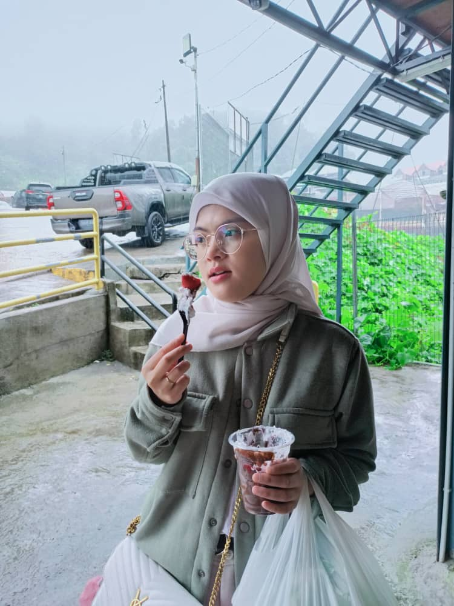
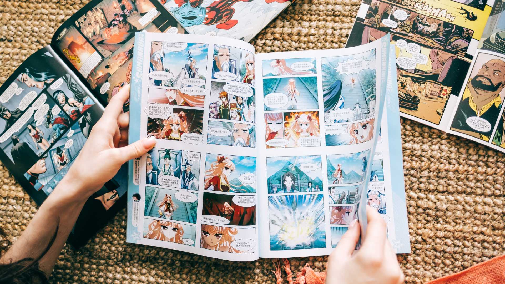

Below will be explaining about my biodata and my full resume
MY RESUME
Click to Get a Full View of My Resume
QUALITIES
Active Listener
Social Media Platform
Good Memory
Brainstorming
...This is my personal resume that I have used for my industrial training program...

◡̈ Nik Nur Adila Amalin binti Nik Aziz ◡̈
I will be introducing myself, my name is Nik Nur Adila Amalin binti Nik Aziz, I am 21 years old. I took the course late. Before this, I am studying for a different course, because I can't follow the course, as it is hard for me, so I decided to stop and study for a different course. I am born on 28 April 2003 at Hospital Sultanah Aminah, Johor Bahru around 2 am in the morning. Currently, I like to read manhwa, manga and manhua Since I was a kid, reading has always been one my hobbies. My cousin is the one that introduce me to the manhwa and started from that,  I start to read it everyday, and I got an inspiration from reading these materials. Other than that, I also enjoy watching anime at least 2 to 3 times a week. As for my ambition, I want to work in an office, as I prefer to work in an environment that is peaceful and only deal with the higher ups only. I hope that I will be able to achieve my dreams, so that I can make my parents and family happy.